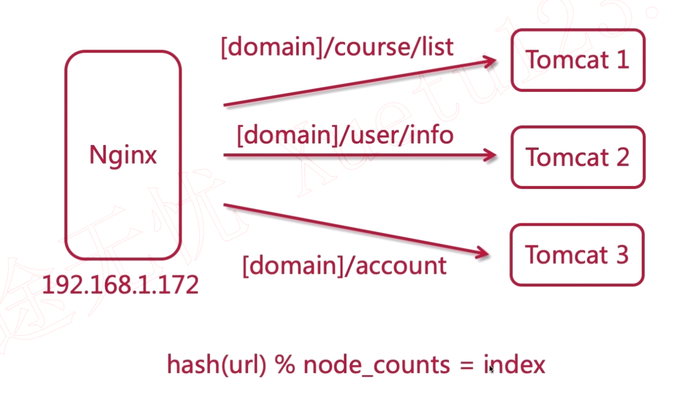

Keepalived 双机热备原理
双机主备的缺点：如果在主节点比较稳定，一直没有问题的话，这时备用节点的服务器一直不使用，这样会造成成本开销加大。
因此就要采用双机热备的策略，将备用节点利用起来，在没有问题时，备用节点用来做其他的事情。
工作学习中的点点滴滴。
双机主备的缺点：如果在主节点比较稳定，一直没有问题的话，这时备用节点的服务器一直不使用，这样会造成成本开销加大。
因此就要采用双机热备的策略，将备用节点利用起来，在没有问题时，备用节点用来做其他的事情。
当主节点 Nginx 服务挂掉之后，Keepalived 还会继续挂在主节点上运行，这时请求网站时，网站是不能访问的，这时需要将 Nginx 重新启动，否则网站是不能访问的，如果 Nginx 不能再次启动，这时就需要将 Keepalived 主节点切换成备用节点。这时就需要写一个脚本，来实现这个功能。
Read on →动静分离的本质就是分布式，把动态接口和静态的资源分开这样的话就可以减少后台服务器的压力，提高了静态资源的访问速度，因为静态资源是可以被缓存的，一旦有了缓存的话，用户访问的速度就回更快。后端就不需要再去渲染页面，以往的开发，html、jsp是需要服务器去渲染的，现在采用动静分离，静态资源都是交给客户端去渲染。
Read on →
Nginx默认访问使用的是http协议，如果要使用https协议，需要为网站配置SSL证书，因为https是安全的，对传输的数据进行了加密。使用https，必须要有一个域名，并且域名需要备案之后才可以使用。
申请完SSL证书后，会得到两个文件，一个是.crt后缀的文件是证书文件，还有一个是.key文件，是密钥文件。
Read on →
从字面上可以看出，他是基于URL的hash算法，根据URL获得的hash值将请求分配到不同的节点上

Read on →hash(ip) % node_counts = index
通过对客户端IP进行哈希然后根据上方公式分配到对应的服务器处理，之后的每次请求，只要客户端的IP没有变化，所有的请求都会请求到这台服务器上。
由于nginx的ip_hash算法是根据IP的前三个数值进行的hash，所以内网使用时，只会访问同一台服务器上。如果有人进行不正当的大量请求，这时所有的请求都会转发到同一台服务器上，这时会造成这台服务器的负载升高。
当使用ip_hash的方式进行负载均衡时，如果要临时移除一台服务器时，不能直接将这个server删除，要将这要服务器标记为down。
该算法，在增加或减少节点时，都需要重新计算。
Read on →根据hash算法，对服务器节点进行hsah，然后放到一个顺时针闭环上，当用户访问时，通过hash，顺时针找到距离他最近的节点